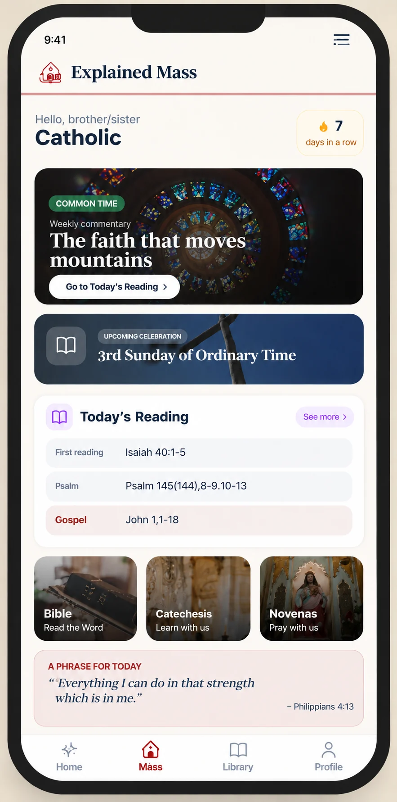

Processing payment...
98%
You've just received a special gift, available only on this page.
Your exclusive offer
$7.90 USD/month
Monthly subscription · instant access
You will be charged $7.90 USD every month, with no end date, until you cancel.
The app that explains the Holy Mass of every day — in just one click!
Sunday? Lent? Advent? The app brings you the daily reflection, the liturgical season and the readings explained in just a few minutes. The Holy Mass, with you, every day.
